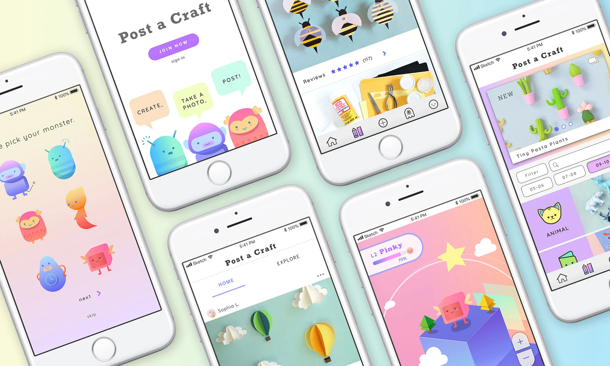
Do you have kids who love arts and crafts? Would they be interested if there was an app,
where they can find unlimited fun craft ideas, post their projects, and share their ideas
safely with peers? Do you worry about your kids getting exposed to inappropriate postings
and destructive comments?
Post a Craft is a community craft platform for kids who love arts and crafts. It is mainly targeted
towards elementary students and middle schoolers who want to share their projects, brainstorm
ideas, and explore other people’s work. Not only the app is a safe place that provides an infinite
amount of craft ideas, it also encourages creativity. Each user will have a pet monster to take care of;
they will be able to decorate and customize their monster and its environment. The app incentives the user
to cultivate their artistic skills.
Safety is the main priority. The app will have AI filtering system that oversees the comment sections,
captions, and even the photos themselves to spot inappropriate content. The AI system will then send the
subject matter to human moderators for a final review. Social media platforms targeted towards adults can
be dangerous for younger users; however, users of Post a Craft can be assured that they will not be exposed
to inappropriate postings. It is a safe place for kids to explore.
DURATION:
8 Weeks
Programs:
Sketch, Principle, Photoshop
ROLE:
UX / UI Design
“A child’s mind is not a container to be filled but rather a fire to be kindled.”
User Persona
By interviewing children and parents, I took into account of the behaviors and goals of each individual. I wanted to create a platform where typical users can express themselves while addressing parents concerns.
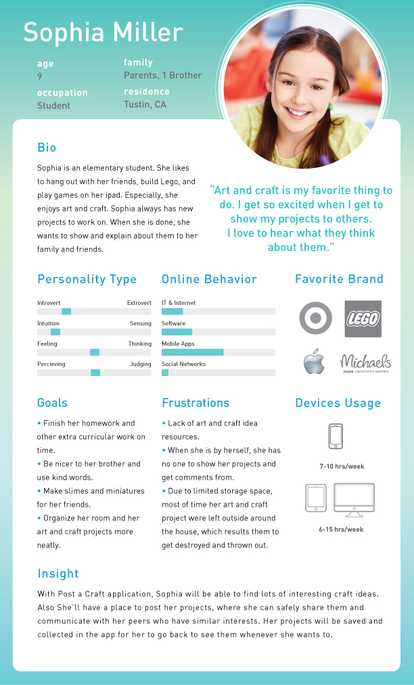
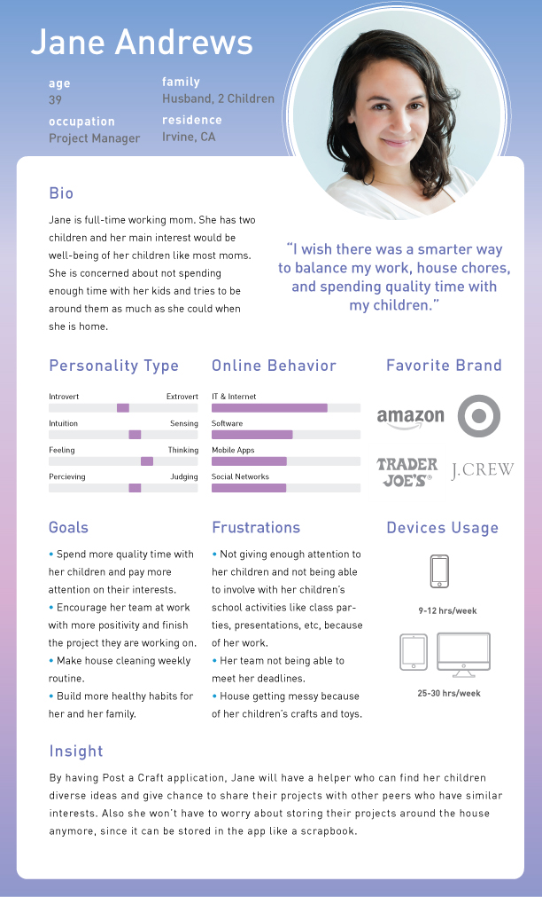
Flow Chart
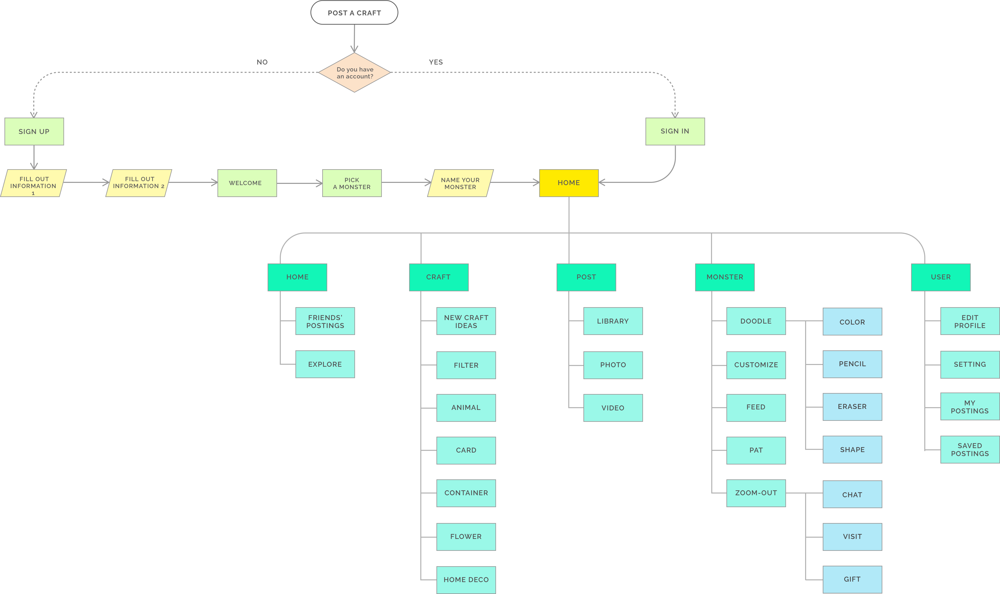
To make the app user-friendly, there are 5 main sections. Home, Craft, Post, Monster, and User. A child will be able to navigate through the app easily. They will also be able to filter through the craft ideas to find projects that meet their level and by materials. The app can also be customized to fit the child’s aesthetic.
Styleguide
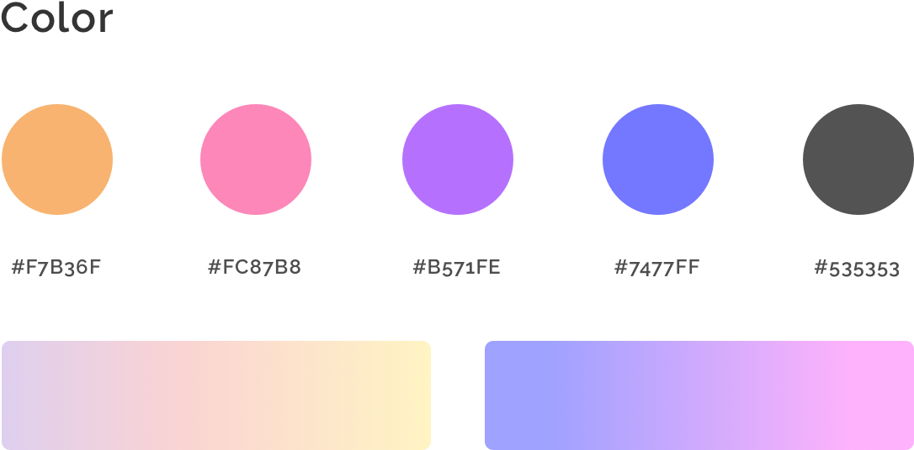
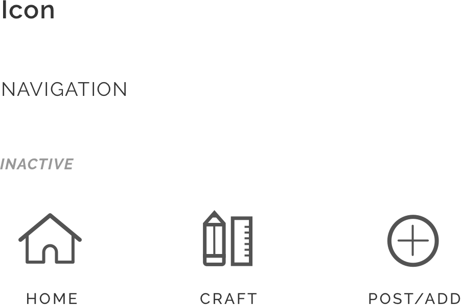
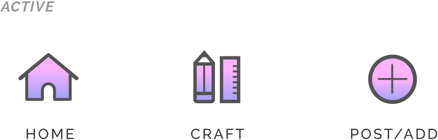
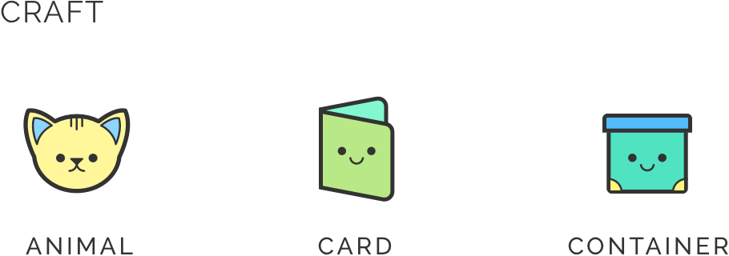
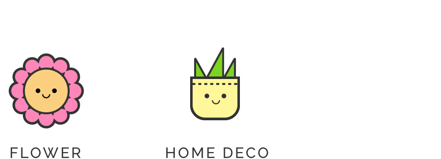
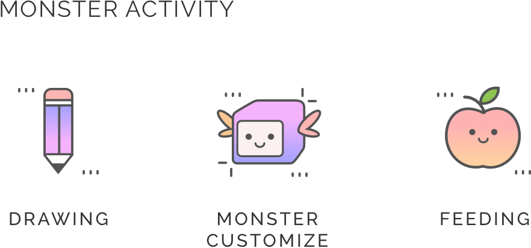
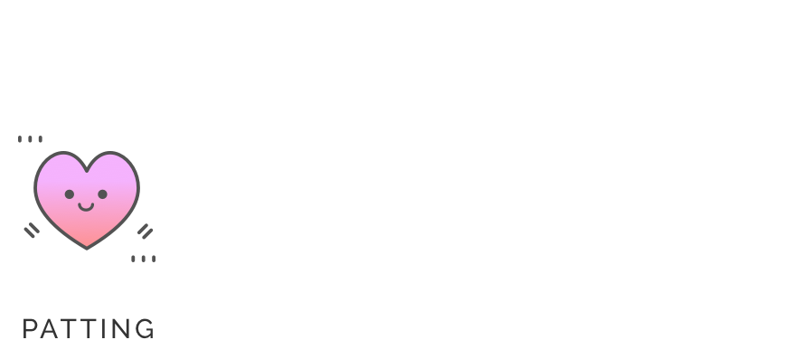
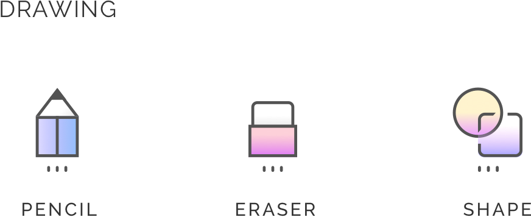
Application
Home
The Home section is divided into 2 subsections. The main section will show friend content and posts. The second section is where one can explore posts from other users.
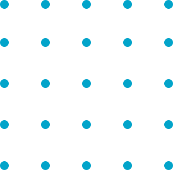

Craft
The Craft section will consist of project ideas. A filter can be used to find specific craft ideas by age, level, materials, and other categories. Children of all levels will be able to find many age appropriate project.

Monster
The monster section is where users can interact with their monsters. This section motivate users to use their imaginations to take care of their pet. The user will feed, pet, and customize their monsters, and will decorate the environment by using shapes and drawings.
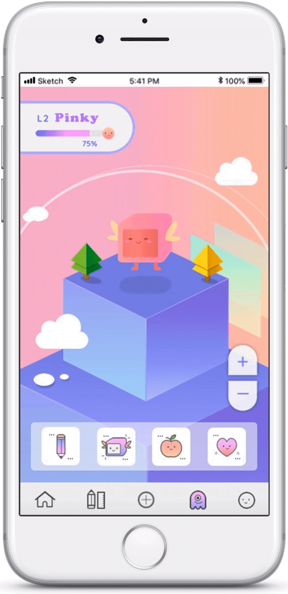
By zooming out, the users will see their friend’s monsters. This area allows friends to visit their friend’s monsters, send gifts, and chat with each other. This feature can be disabled in the user page.

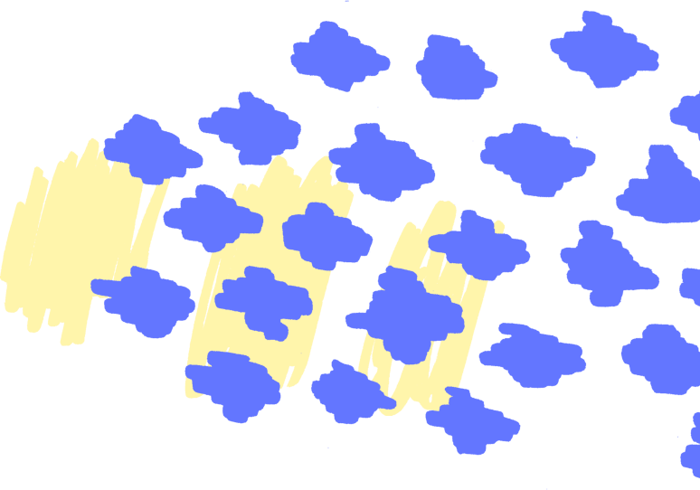